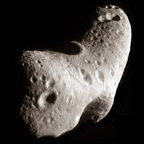

An asteroid is a celestial body - composed of rock, metal or a mixture of both - that is orbiting the Sun. Most of them are in the asteroid belt between Mars and Jupiter. Even though there are millions of asteroids with sizes up to more than 500 km they are of no danger to the planet Earth. The scale of the solar system is so immense that even inside the asteroid belt the average distance between two asteroids is above one million km - or three times the distance between Earth and the Moons.
The biggest body in the asteroid belt - Ceres - is officially not called an asteroid anymore but a dwarf planet. If you try to envision the asteroid belt don't get fooled by some science fiction films: travelling around in the asteroid belt with your spacecraft doesn't require constant steering in order to avoid crashes with asteroids.
